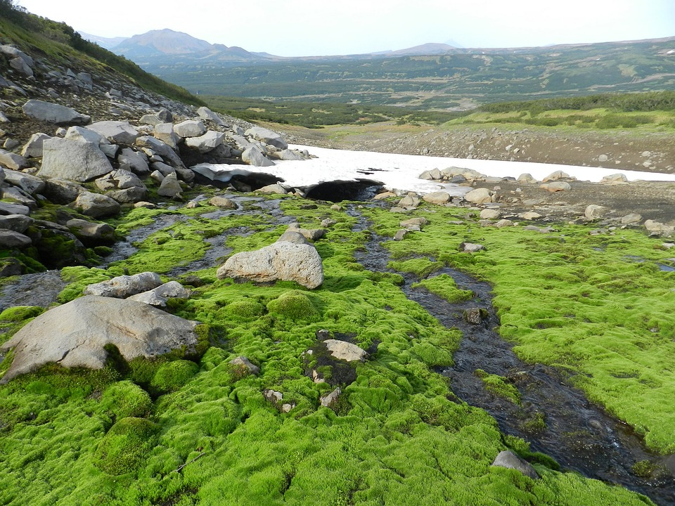
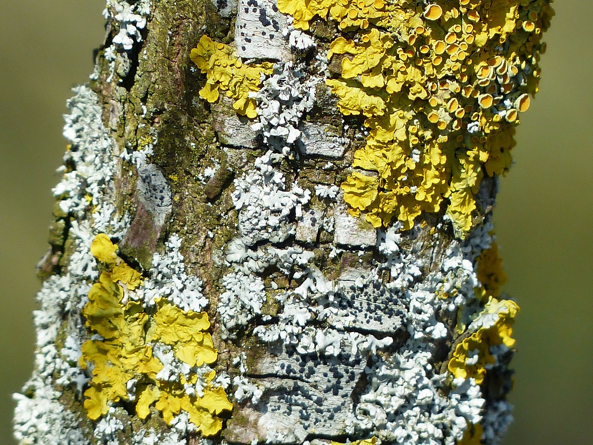
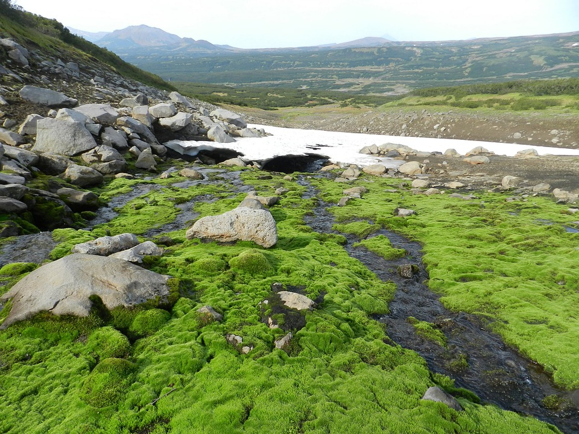
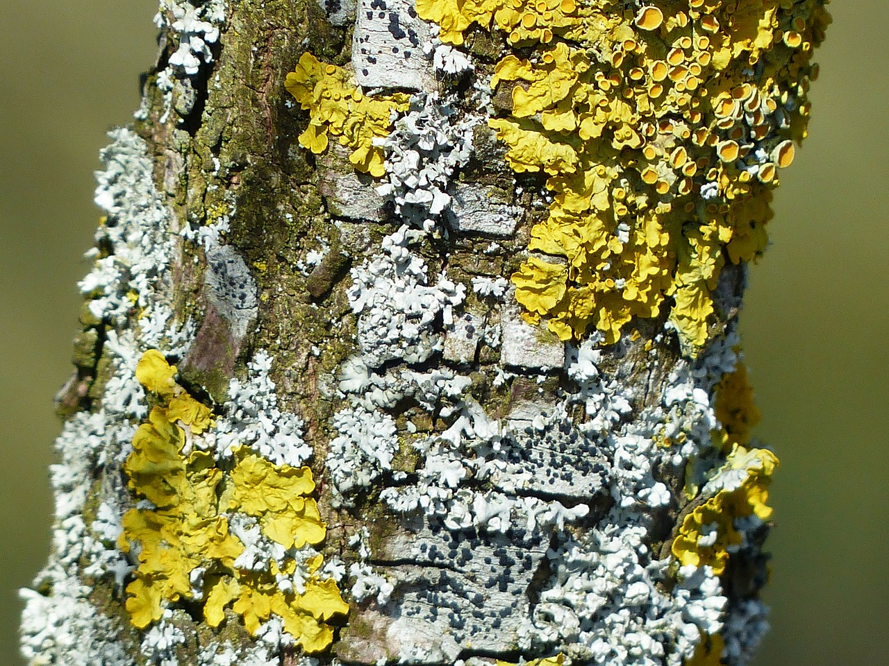
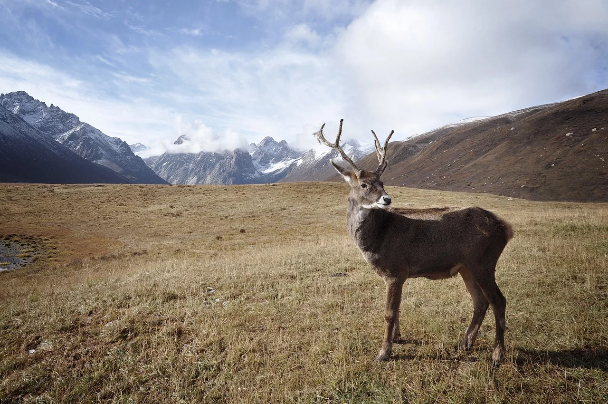
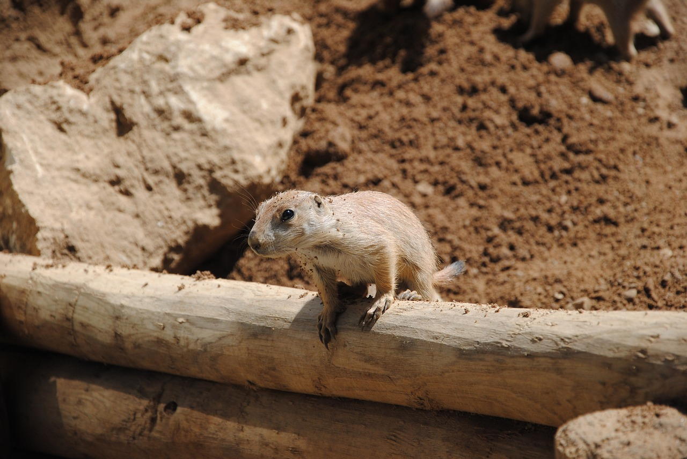
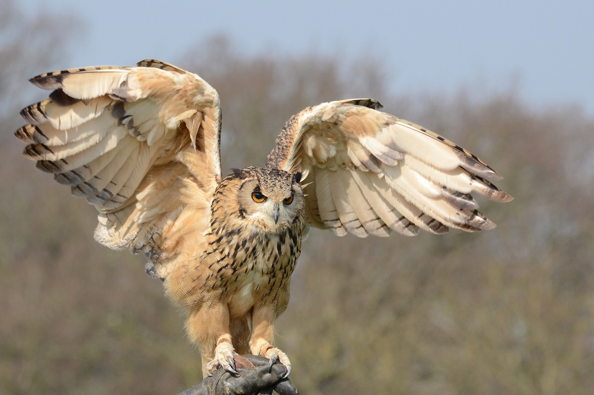

Biomes
Tundra
In physical geography, tundra (/ˈtʌndrə, ˈtʊn-/) is a type of biome where the tree growth is hindered by low temperatures and short growing seasons.1
Tundras of the World
- Cerro de Pasco, Peru
- Longyearbyen, Norway
- Iqaluit, Canada
- Kerguelen Islands, French Southern Lands
- Nuuk, Greenland
- Apartaderos, Venezuela
- Grytviken, South Georgia
- Tiksi, Russia
- Uyuni, Bolivia
- Murghob, Tajikistan
- Mount Wellington, Australia
- Blönduós, Iceland
- Mykines, Faroe Islands
- Putre, Chile
- Coranzuli, Argentina
- Campbell Island, New Zealand
Tundra Plants
Perennial grasses, sedges, forbs, cushion plants, mosses, and lichens
 



Tundra Animals
Reindeer (caribou), musk ox, Arctic hare, Arctic fox, snowy owl, lemmings, and polar bears
  